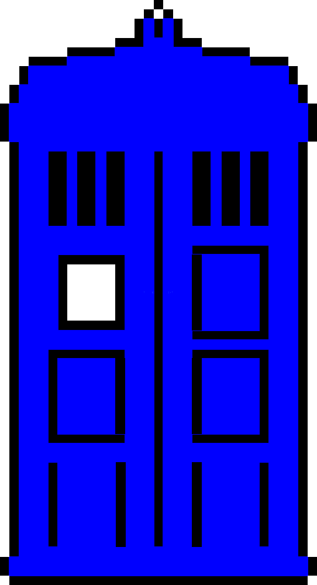

Many television shows have active fan-bases now. These dedicated fans gather together every week on Twitter, Tumblr and Reddit to discuss their favourite show. They share GIFs, memes and quotes. They debate and argue over character choices and plot decisions.
This vocal shift, from passive viewer to engaged fan, hasn't passed advertisers by either. Marketing firm Troika has noted that increasingly clients are asking to target television 'fans' directly rather than 'viewers.' According to Troika, 'fans' buy more, engage more, participate more and share more. Furthermore, In research conducted by Troika last September, 85% of those surveyed reported being 'fans' of a series, 97% in the 18-24 age range.
When these fans come together, they form something known as a 'fandom' - a group of fans gathering online to share content and discuss their favourite show, film or band. Fandoms often spur creative content, with groups creating memes, parodies or even fan-fiction (taking existing works and building on them with new, original stories.)
In November 2018 a seemingly typical teen romance trailer was released on Twitter for upcoming film After - however, as the New Statesmen noted the film is based on internet fan-fiction about Harry Styles, of One Direction fame. Over the course of a year, the original fan-fiction series grew to have over 10 parts and 450 million reads, which lead to it being quickly snatched up and published by Simon & Schuster, who shortly after optioned the movie rights.
This creative outlet for fans can also be used to identify and attempt to repair certain issues with some works, fans unhappy with the LGBT representation of Harry Potter, for example, have penned thousands of works with LGBT focussed plots.
Howard Sklar, an Icelandic writer argued in his essay On the Nature of Emotional Responses to Fictional Characters that the way audiences respond and connect with characters over time, growing to know and become intimately familiar with them is not so different from that of a friendship with a real-life person, delivering some of the same emotional responses.
Vox and Mashable both found that fan-fiction and 'fandoms were increasingly safe-spaces for teens, women, and, essentially, any underrepresented group to write and share content. As Elizabeth Minkel explained in a New Statesmen article, fan-fiction allows marginalised groups the chance to subvert the mainstream or popular perspective, creating their own, idealised worlds to escape into.
The fact is 'fandom' and the real-world have an inherent disconnect. Tumblr's Fandometrics illustrates this clearly. If you look at the most popular show according to the Nielsen Research Group, you would see that it's This is Us, an NBC show. Metacritic says Netflix's Making a Murderer, Rotten Tomatoes says Hulu's Homecoming.
These shows don't feature at all in Tumblr's top 10 discussed shows of 2018 list, nor do they feature in the top 50. Whilst these other shows enjoy mainstream success and numerous accolades, they don't generate the kind of following that amasses audiences - or 'fandoms.' According to Tumblr, the most popular shows are CW's Riverdale and BBC's Doctor Who.
This lack of fandom is largely due to the demographic tuning in - This is Us has a median audience age of 53. Riverdale has a median age of 33, which is the lowest on network television.
So what happens when all of a sudden the content for these 'fans' stops coming? Every year, dozens of shows airing on US networks get the axe. These fans aren't ready to give up or roll over. They start tweeting, organising and asking--loudly--for their show back.
In May 2018, Fox cancelled both Lucifer and Brooklyn 99. Both shows were largely successful and had avid online-followings; neither were expected to be cancelled. After an outpouring of fan pressure and behind-the-scenes negotiations, both shows returned on different networks.
Brooklyn 99 was cancelled and revived 48 hours later by NBC. The outpouring of thousands of fans - and celebrities, like Mark Hamill, the Backstreet Boys and Guillermo del Toro were all sure to play into the decision. For a network like NBC, the decision to renew a show with a fan-base 'I-made-earlier' was simple. It would buy them goodwill and was relatively cheap for them to do so since their in-house studio NBC Universal already made the show (Fox was just the distributor.)
Another cancelled show was Lucifer. Lucifer fans tweeted, emailed and posted over 3 million times - with the hashtag #SaveLucifer trending for several weeks in a row. Eventually, Netflix stepped in and announced they were saving the show for a fourth season.
As Christina Savage explained in her thesis Chuck vs The Ratings, the idea was simple for these fans: demonstrate to both the network and the advertisers that there was both an audience for the show and for the advertising.
This isn't anything new and predates the internet considerably. One of the earliest and most successful campaigns came in the form of the original STAR TREK. The show premiered in Fall 1966 to only modest ratings, and by the end of its second season, it was axed by NBC. A small, but organised and dedicated, group of fans were determined to change NBC's mind. The network received more than 110,000 postcards and letters. Considering the lack of internet and how dispersed and disconnected these fans were, it's even more impressive. Eventually, NBC ordered a third and final season.
This isn't a necessarily a new phenomenon, but the internet and social media have amplified these fans, giving them a voice when previously they were isolated. Now groups from all over the world can come together and rally behind their cause. This level of fan-participation and engagement is a perfect example of how technology and fan-mentality combined can create high-levels of participation and engagement.